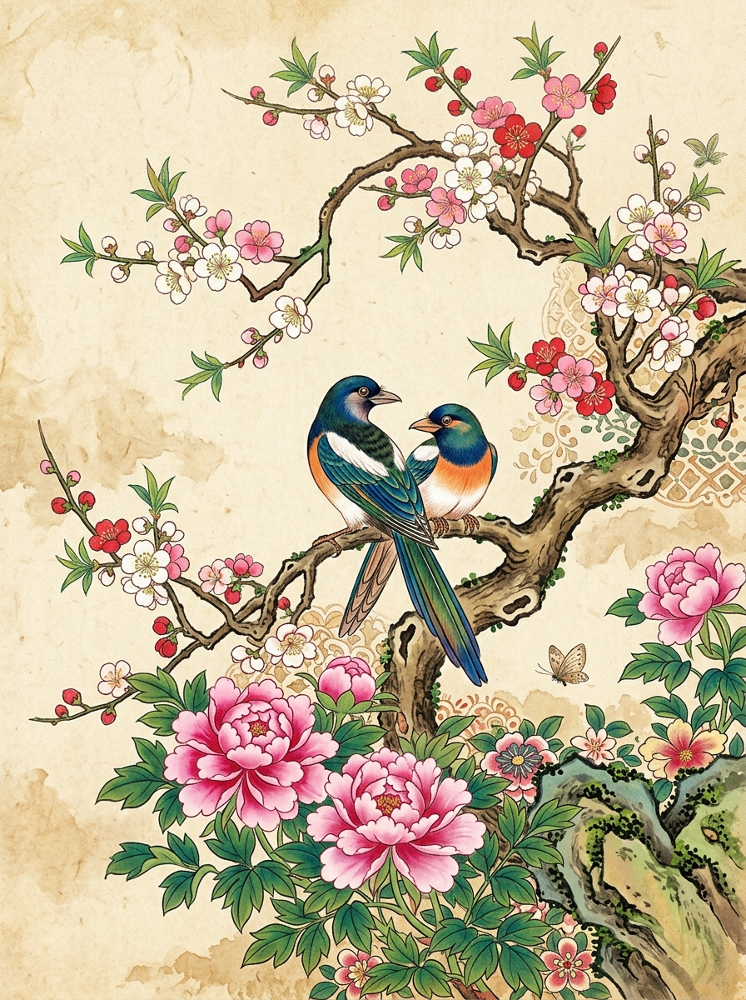
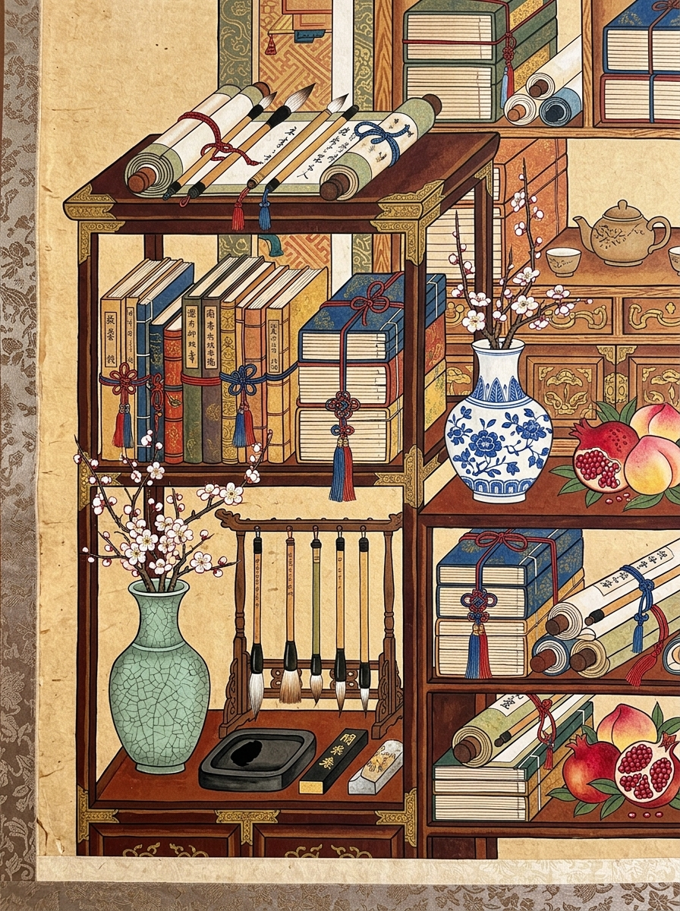
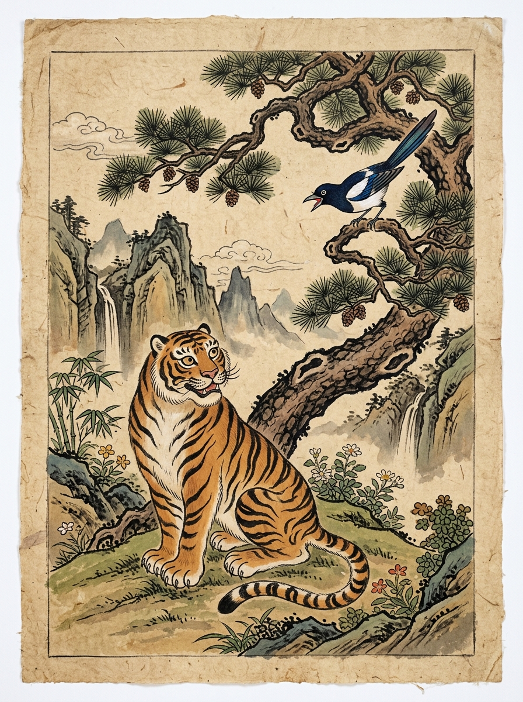
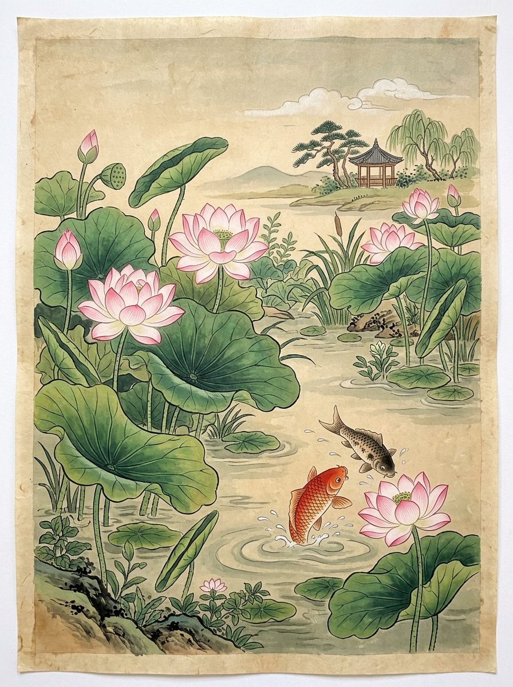
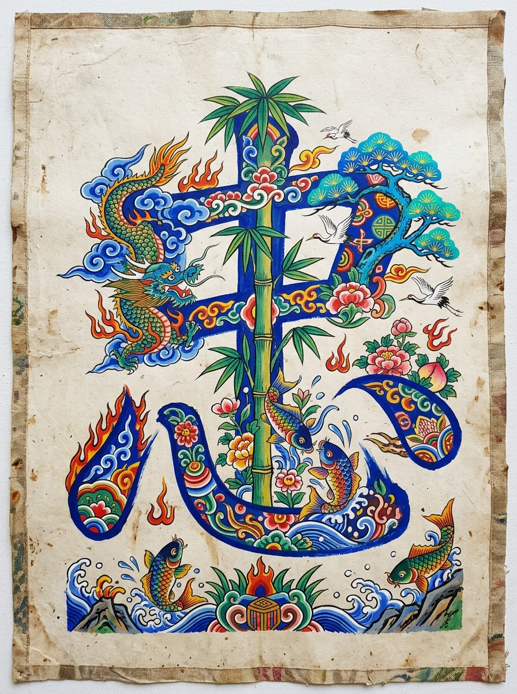

민화작가 오령 표현희 보호작품
화조도
부귀화조의 노래 (富貴花鳥)
작가: 오령 표현희
탐스러운 모란꽃과 정다운 한 쌍의 새를 통해 부부의 화합과 가정의 번영을 기원한 전통 채색화입니다.
민화(民畵)는 옛 선조들의 소박한 꿈과 장수, 부귀영화, 가족의 평안을 담은 가장 한국적인 그림입니다.
민화작가 오령 표현희의 화실은 전통의 숨결을 잇는 깊이 있는 채색과 따스한 감성을 나누는 예술 공간입니다.
작가 오령 표현희의 정성과 숨결이 깃든 고화질 민화 작품들을 감상해 보세요.
작품을 클릭하시면 상세한 기법 해설과 고화질 원본 비율을 보실 수 있습니다.

작가: 오령 표현희
탐스러운 모란꽃과 정다운 한 쌍의 새를 통해 부부의 화합과 가정의 번영을 기원한 전통 채색화입니다.

작가: 오령 표현희
단정한 서책과 백자 화병, 문방사우가 정갈하게 놓여 선비의 학문적 열정과 입신양명의 기원을 나타냅니다.

작가: 오령 표현희
새해의 액운을 막아주는 해학적인 호랑이와 좋은 소식을 물어다 주는 반가운 까치의 정겨운 문답을 그렸습니다.

작가: 오령 표현희
진흙 속에서도 맑게 피어나는 연꽃의 군자 정신과 자유로이 뛰어노는 잉어를 통해 다산과 합격을 기원합니다.

작가: 오령 표현희
유교의 주요 덕목인 충(忠)의 글자 속에 용과 대나무, 잉어 등 상징물을 조화롭게 배치하여 절개와 의리를 노래했습니다.
조선시대 민중들의 삶과 애환, 간절한 기도가 담긴 민화의 숨겨진 상징과 기법을 소개합니다.
모란꽃은 '꽃 중의 왕'이라 불리며 부귀영화를, 다정한 원앙이나 한 쌍의 새는 부부의 백년해로와 금슬을 뜻합니다.
조선 정조대왕이 사랑했던 그림으로, 서책과 진귀한 기물을 그리며 학문 숭상과 과거 합격(입신양명)을 염원했습니다.
사악한 기운을 쫓는 맹호(호랑이)를 친근하고 익살스럽게 묘사하고, 기쁜 소식을 전하는 까치를 함께 그려 벽사구복(辟邪求福)을 기원했습니다.
더러운 흙탕물에 물들지 않고 맑고 향기로운 꽃을 피우는 연꽃은 군자의 고결함과 청렴, 그리고 연이어 과거에 급제함을 상징합니다.
한지에 물감이 번지지 않도록 아교와 백반을 끓인 물을 골고루 칠해 말립니다.
초도안을 순지 밑에 두고 먹선을 얇고 균일하게 베껴 바탕 선을 완성합니다.
천연 안료(분채/석채)로 밑색을 올린 뒤, 물 붓으로 경계를 부드럽게 펴줍니다.
외곽선을 정교하게 살려 마무리하고, 붉은 인장(낙관)을 찍어 완성합니다.
그림을 그리며 겪는 고민, 작품 피드백, 화실 수다와 전시 소식을 따뜻하게 나눠보세요.
안녕하세요. 민화작가 오령 표현희입니다. 옛 그림이 주는 깊은 울림과 정겨운 위로를 현대의 일상 속으로 전하고자 붓을 들고 있습니다. 처음 붓을 잡는 초보자부터 전통 채색의 깊이를 탐구하는 애호가까지, 따뜻한 차 한 잔과 함께 온전히 나만의 아름다운 색을 마주하는 힐링 공간입니다.
작품 해설 내용이 들어갑니다.
작가에게 전하는 응원 한마디 (0)